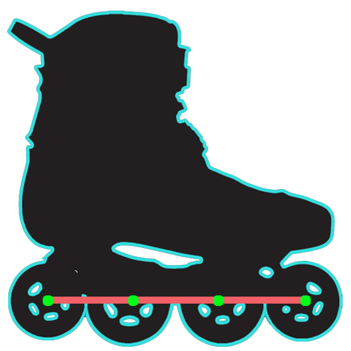
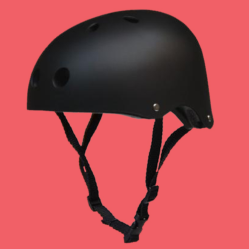
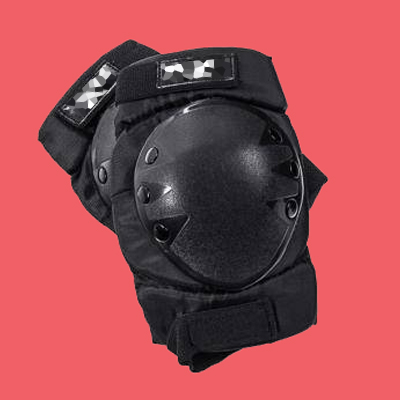
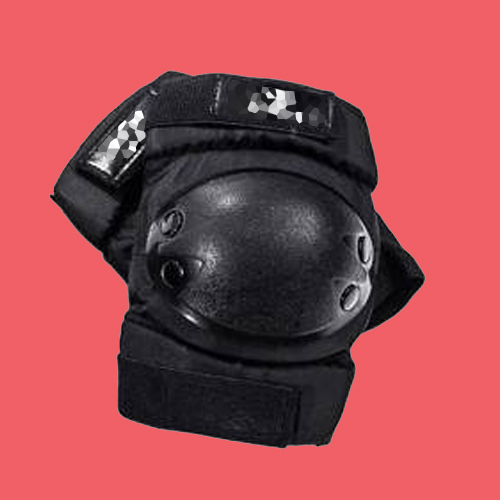
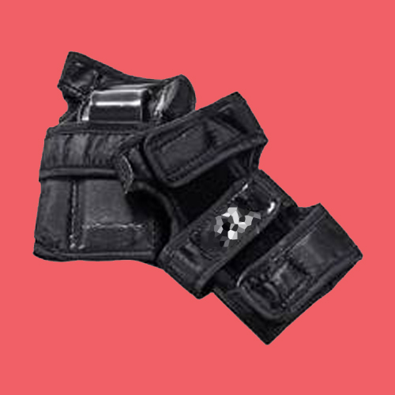

Os patins usados para Slalom tem características diferentes para atender as necessidades da modalidade. No slalom são constantemente feitas
manobras de giro, torção e apoio em uma roda.
A base precisa ser resistente para aguentar as torções e apoios.
A distância entre as rodas é menor para facilitar manobras que cruzam os patins. (pontos C, D e E na imagem).
Consequentemente a distância entre o final das rodas externas e a bota é menor, e isso também facilita nas manobras em que
se cruzam os patins. (pontos A e B na imagem).
As duas rodas do centro precisam ser maiores, isso ajuda nas manobras de giro.
Isso chama-se base rockeada. Essa base rockeada pode ser feita de duas formas:
Diferença de altura entre rodas.
Normalmente a diferença é de 4mm ao todo, exemplo: rodas externas 76mm e as internas 80mm.
Base com "curva". Essa base especial tem a altura dos parafusos externos diferentes.
Não sendo necessário ter rodas de tamanhos diferentes.
ALERTA! Para iniciantes que ainda não sabem o básico sobre patinar, recomenda-se patins com a base reta.
A base rockeada pode ocasionar quedas, pois existe uma diferença na estabilidade entre uma base reta e uma base rockeada.
Base reta Patins com a base reta e rodas retas.(Pode-se fazer slalom com eles, mas são mais recomendadas as bases rockeadas)
Rodas do meio maiores

Base reta com rodas centrais maiores.
Base curva rockeada Base com extremidades "curvadas para cima". Rodas do mesmo tamanho.
Equipamentos de proteção
São recomendados todos os equipamentos de proteção para a prática do esporte.
As lesões e ferimentos podem ser graves e cada momento machucado é menos tempo treinando.
Os equipamentos de proteção são cotoveleiras, joelheiras, munhequeiras e capacete.
Nomalmente essas proteções envolvem os membros com algum tecido elástico e são presas com velcro,
tendo um casco plástico de proteção e abaixo do casco uma espuma. Todo esse conjunto evista os choques e esfolamentos.
Capacete

Mantenha seu crânio protegido.
Joelheiras

Normalmente ao cair de frente você terá a tendência a colocar os cotovelos como apoio.
Cotoveleiras

Seus joelhos também são essenciais na patinação.
Munhequeiras

As munhequeiras tem uma placa para proteger o seu pulso contra choques e torções.